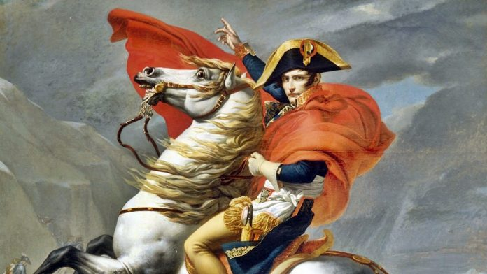
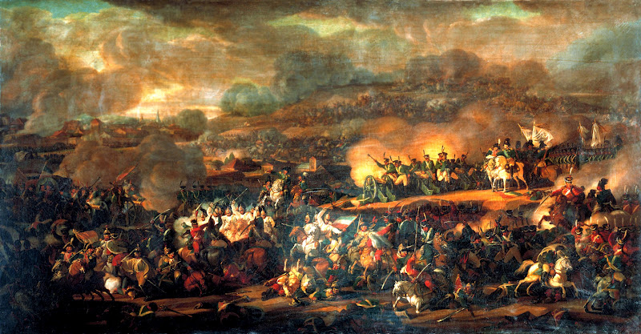
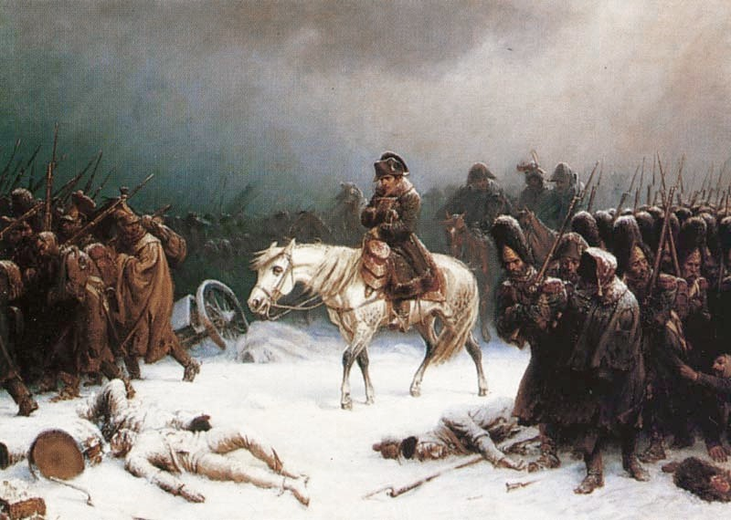

Eventos históricos que mudaram o mundo
Para voltar à página inicial, clique no botão abaixo.
Página inicialGuerras Napoleônicas

As Guerras Napoleônicas ou Guerras Napoleónicas foram uma série de conflitos colocando o Império Francês, liderado por Napoleão Bonaparte, contra uma série de alianças de nações europeias. Essas guerras revolucionaram os exércitos e táticas dos países da Europa, com grandes tropas sendo deslocadas para o combate de forma nunca antes vista no continente
- Localização: Europa, Oceano Atlântico, Rio da Prata, Oceano Índico, Cáucaso, América do Norte, Mar Mediterrâneo, Mar do Norte
- Data: 1803 - 1815
- Desfecho: Derrota do Império Francês
Motivo das Guerras:
Uma das principais marcas da Era Napoleônica, iniciada quando Napoleão chegou ao poder, foi o expansionismo bonapartista, que buscou conquistar áreas na Europa e fora dela, expandindo o Império Francês por meio da anexação de diferentes regiões. Na tentativa de conter esse expansionismo e seus desdobramentos, diversas nações europeias formaram alianças contra a França para enfrentá-la nas Guerras Napoleônicas, formadas por diferentes fases, iniciadas ainda antes de Napoleão ser aclamado imperador.

As Coalizõess
A Primeira Coligação, em que os franceses venceram os austríacos, foi a primeira tentativa de dar o poder novamente a Luís XVI e acabar com a Revolução Francesa. O rei Luís XVI havia fugido de Paris e planejava a contra-revolução, porém, sendo descoberto, foi obrigado a regressar. Este episódio enfraqueceu mais a monarquia, Napoleão Bonaparte intensificou mais o seu poder e a invasão francesa teve início com a assinatura do Tratado de CampoformioA Segunda Coligação, em que novamente a França derrotou seus adversários, foi mais uma tentativa de acabar com a Revolução. Essa guerra terminou com a assinatura de um tratado de paz entre a França e o Reino Unido, o Tratado de Amiens.
Na Terceira Coligação, os reis da Europa receavam o fim das monarquias e, assim, os adversários franceses continuam a pretender a destruição da economia francesa. Mais uma vez Napoleão venceu e criou o Bloqueio Continental, que consistia em acabar com a economia inglesa ao impor que fossem cortados laços comerciais com a Inglaterra. Nesta altura, 1804, Napoleão tornou-se imperador da França.
Na Quarta Coligação, a guerra foi intentada contra Portugal e Espanha. Em decorrência do Bloqueio Continental, Portugal levou a corte real para o Brasil, transferindo mesmo o seu governo para o Rio de Janeiro, com receio das consequências da decisão de ir contra o novo plano de Bonaparte contra a economia inglesa. Na Espanha, José Bonaparte – irmão de Napoleão, se torna rei e deixa de existir a Casa Real Espanhola. O povo se revolta e milhares de espanhóis são fuzilados.
No período da Quinta Coligação, Napoleão dominava praticamente toda a Europa. Nessa altura, entretanto, Napoleão foi vencido pela Rússia na Batalha de Borodino, conhecida como a mais sangrenta das Guerras Napoleônicas e que teve a duração de apenas um dia.
Por ocasião da Sexta Coligação, Napoleão assina o Tratado de Fontainebleau - documento em que abre mão do seu governo, e é exilado na Ilha de Elba, de onde consegue fugir, regressando ao poder num governo que dura 100 dias (Governo de Cem Dias). O exército francês, então, luta contra as forças absolutistas, mas agora com um número reduzido de soldados, os quais são, por fim, derrotados. Chega, assim, o fim das guerras napoleônicas, em 1815. Mais uma vez exilado, agora na ilha de Santa Helena, Napoleão Bonaparte morre em 1821.
